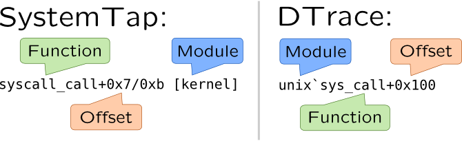

Dynamic code analysis
Definition
We will refer to program analysis as code analysis since program is a product of code compilation, On contrary, static code analysis is performed without actually running the program. Code analysis helps to match program behaviour such as opening files, sending messages over network to their code.
Backtraces (stacks)
Simplest way to perform code analysis is to print a backtrace.
If we extract program counter and register values from a stack, we may be able to recover history of calling functions and their arguments. For example, once I encountered panic in Solaris kernel. Printing stack (or, more correctly backtrace) from crash dump uncovered this:
fzap_cursor_retrieve+0xc4(6001ceb7d00, 2a100d350d8, 2a100d34fc0, 0, 0, 2a100d34dc8) [...] zfsvfs_setup+0x80(6001ceb2000, 1, 400, 0, 6001a8c5400, 0) zfs_domount+0x20c(60012b4a240, 600187a64c0, 8, 0, 18e0400, 20000) zfs_mount+0x20c(60012b4a240, 6001ce86e80, 2a100d359d8, 600104231f8, 100, 0) domount+0x9d0(2a100d358b0, 2a100d359d8, 6001ce86e80, 60012b4a240, 1, 0) mount+0x108(600107da8f0, 2a100d35ad8, 0, 0, ff3474f4, 100) [...]Name prefix of top-level function implies that problem is in ZAP subsystem, and bottom function says that problem occur while mounting file system. Second argument to
zfs_domount function is the name of mounting dataset. By reading string from it we were able to determine its name, make it readonly and boot the system.
In DTrace stack functions may be used as a keys to an associative arrays, or as separate function calls (in that case they will just print the stack). Stack of kernel functions is available by using stack() subroutine, while userspace application stack is available using ustack() subroutine. Both of them have optional constant integer argument which specifies how many stack frames should be printed. For example:
# dtrace -c 'cat /etc/passwd' -n '
syscall::read:entry
/pid == $target/
{ stack(); ustack(); }'
There are multiple SystemTap functions that are responsible for printing stack:
-
backtrace()andubacktrace()returns a string containing a list of addresses in hexadecimal format;
-
print_stack()andprint_ustack()get stack from string returned by backtrace functions, convert addresses to symbols wherever possible and print it;
-
print_backtrace()andprint_ubacktrace()gets stack and prints it immediately, thus no arguments accepted and no return values supplied;
-
task_backtrace()accepts pointer to process/threadtask_structas a parameter and returns its kernel stack wherever possible.
Functions which haveuin their names print userspace backtrace, functions which do not have it, print kernel backtrace. For example:
# stap -c 'cat /etc/passwd' -e ' probe kernel.function("sys_read") { if(pid() == target()) print_stack(backtrace()); } ' # stap -c 'cat /etc/passwd' -e ' probe process("cat").function("read") { print_ubacktrace(); } '
Printing backtraces involves getting a symbol which matches some memory address which involves digging into symtab or similar section of binary files. Dynamic tracing systems can do that and print (DTrace) or return a symbol as a string (SystemTap) with following functions:
| Userspace | DTrace | SystemTap |
| Symbol |
usym(addr) or ufunc(addr) |
usymname(addr) |
| Symbol + offset |
uaddr(addr) |
usymdata(addr) |
| Library |
umod(addr) |
umodname(addr) |
| Kernel | DTrace | SystemTap |
| Symbol |
sym(addr) or func(addr) |
symname(addr) |
| Symbol + offset |
symdata(addr) |
|
| Library |
mod(addr) |
modname(addr) |
| Module, symbol + offset |
printf("%a", addr) |
|
For example, some kernel interfaces like VFS are polymorphic, so they have a function pointer table. You may extract these pointers and resolve them to a function name:
# stap -c 'cat /etc/passwd' --all-modules -e '
probe kernel.function("do_filp_open").return {
if(_IS_ERR($return)) next;
addr = $return->f_op->open;
printf("name: %s, addr: %s, mod: %s\n",
symname(addr), symdata(addr), modname(addr)); }'
Similar example for DTrace:
# dtrace -c 'cat /etc/passwd' -n '
fop_open:entry {
this->vop_open =
(uintptr_t)(*args[0])->v_op->vop_open;
sym(this->vop_open); mod(this->vop_open); }'
In this example when cat will try to open file, tracing script catch this event and show name of filesystem driver and function from it implementing open() call (unless it is generic function from kernel).
vmlinux or binary executable files. To search over libraries and modules, use -d, --all-modules and --ldd options as stated in SystemTap.
SystemTap and DTrace have different formats when printing backtrace symbol names:

Call trees
Note that backtraces show only a stack, a linear structure of functions that lead to event, they do not include callees that were previously called, but already exited. For example in following code (which obviously causes a segmentation fault):
char* foo() {
return NULL; }
void bar() {
char* str = foo();
puts(str); }
we will see functions bar() and puts() on stack, but the problem is caused by foo() function. To trace it along with other functions, we will need a call tree, which is close to call graph which is collected during static calling analysis.
Global or thread-local flag (say traceme) is used to gather call tree. It is set when we enter some function (which is considered a bound for tracing), and reset when we leave it. In following example, we, for example, may limit tracing by using bar() as our bound. Without using such boundary functions, tracing will have too much performance penalties. Probes are attached to all functions, but predicate is used to check if traceme flag, so only useful probes will be printed. Such probe only print names of functions preceded with indent whether indent is set according to a depth of call, so output look like a tree.
kernel.function("*") construct. But even with blacklisted probes, it will most likely panic system, or cause a serious system slowdown. To keep that from happen, limit number of attached probes to a module or at least subsystem by using @path/to/files.c construct like we do in following examples. In DTrace, however fbt::: is pretty safe and may only cause a temporary small freeze (while probes are attached).
For example, let's see how this approach helps find a source of fault in system call. We will try to execute cat not_exists file which will set errno to ENOENT as expected. Let's find a kernel function that actually reports ENOENT. Usually, negative integer return value used for that, so we will print return values in function return values. This approach is also useful when you have no permission to open file and want to find a security hardening module that stops you from doing that.
In SystemTap call tree indentation is performed through indent() and thread_indent() which are maintaining internal buffer, and increase or decrease number of space characters in it according to a number passed as argument to that functions. It is used in following script:
#!/usr/bin/stap
global traceme;
probe syscall.open {
if(pid() != target() || filename != "not_exists")
next;
traceme = target();
printf("=> syscall.open [%s]\n", execname());
}
probe syscall.open.return {
if(pid() == target()) {
traceme = 0;
}
}
probe kernel.function("*@fs/*").call ?,
kernel.function("*@fs/*").return ? {
if(!traceme || traceme != pid())
next;
if(!is_return()) {
printf("%s -> %s\n", indent( 1), probefunc());
}
else {
ret = 0;
if(@defined($return))
ret = $return;
printf("%s <- %s [%d]\n", indent(-1), probefunc(), ret);
}
}
Output will be following:
# ./callgraph.stp -c "cat not_exists" cat: not_exists: No such file or directory => syscall.open [cat] 0 : -> do_sys_open [...] 11020 : -> do_filp_open [...] 11982 : -> do_path_lookup 12277 : -> path_init 12378 : <- path_init [0] 12451 : -> path_walk 12581 : -> __link_path_walk [...] 14284 : <- __link_path_walk [-2] 14339 : -> path_put [...] 14655 : <- path_put [0] 14732 : <- path_walk [-2] 14755 : <- do_path_lookup [-2] [...] 15449 : <- do_filp_open [4294967294] [...] 15851 : <- do_sys_open [-2]
So, now we can say that problem is in __link_path_walk function. This is output from CentOS 6, in modern kernels __link_path_walk is deleted and responsible function would be path_openat.
indent() function also prints time delta in microseconds since first call. thread_indent() also prints information about execution thread and maintains separate buffer for each thread.
DTrace consumer supports automatic indentation of output if flowindent tunable is set:
#!/usr/sbin/dtrace -s
#pragma D option flowindent
syscall::open*:entry
/pid == $target && copyinstr(arg0) == "not_exists"/
{
self->traceme = 1;
}
syscall::open*:return
/self->traceme/
{
self->traceme = 0;
}
fbt:::entry
/self->traceme && probefunc != "bcmp"/
{
}
fbt:::return
/self->traceme && probefunc != "bcmp"/
{
trace(arg1);
}
Script output for ZFS filesystem will be similiar and reveal that ENOENT error was raised by ZFS module:
# dtrace -s ./callgraph.d -c "cat not_exists" dtrace: script './callgraph.d' matched 69098 probes cat: not_exists: No such file or directory CPU FUNCTION 0 -> open64 0 <- open64 -3041965 0 -> openat64 0 <- openat64 -3041965 0 -> copen [...] 0 -> vn_openat 0 -> lookupnameat 0 -> lookupnameatcred [...] 0 -> fop_lookup 0 -> crgetmapped 0 <- crgetmapped 3298657895888 0 -> zfs_lookup [...] 0 <- zfs_lookup 2 0 <- fop_lookup 2 0 -> vn_rele 0 <- vn_rele 3298588956544 0 <- lookuppnvp 2 0 <- lookuppnatcred 2 0 <- lookupnameatcred 2 0 <- lookupnameat 2 0 <- vn_openat 2 [...] 0 -> set_errno 0 <- set_errno 2 0 <- copen 2
More backtraces
You may also need to track state of kernel data structures or passing parameters during tracing, if you wish to extend your knowledge about kernel or application. Now we know from our traces that Linux uses __link_path_walk() and Solaris has lookuppnvp() functions to lookup file on filesystems. Let's see, how they handle symbolic links. Let's create one first:
# touch file # ln -s file symlink
As you can see, Linux calls __link_path_walk recursively:
# stap -e '
probe kernel.function(%( kernel_v >= "2.6.32"
%? "link_path_walk"
%: "__link_path_walk" %) ) {
println(kernel_string($name));
print_backtrace(); }' -c 'cat symlink'
symlink
0xffffffff811ad470 : __link_path_walk+0x0/0x840 [kernel]
0xffffffff811ae39a : path_walk+0x6a/0xe0 [kernel]
0xffffffff811ae56b : do_path_lookup+0x5b/0xa0 [kernel]
[...]
file
0xffffffff811ad470 : __link_path_walk+0x0/0x840 [kernel]
0xffffffff811ade31 : do_follow_link+0x181/0x450 [kernel]
0xffffffff811adc1b : __link_path_walk+0x7ab/0x840 [kernel]
0xffffffff811ae39a : path_walk+0x6a/0xe0 [kernel]
[...]
Since this function was removed in recent kernels, this behaviour is not reproducible in them.
In Solaris, however, this function is called only once -- for symbolical link:
# dtrace -n '
lookuppnvp:entry {
trace(stringof(args[0]->pn_path));
stack(); }' -c 'cat symlink'
1 19799 lookuppnvp:entry symlink
genunix`lookuppnatcred+0x119
genunix`lookupnameatcred+0x97
genunix`lookupnameat+0x6b
[...]